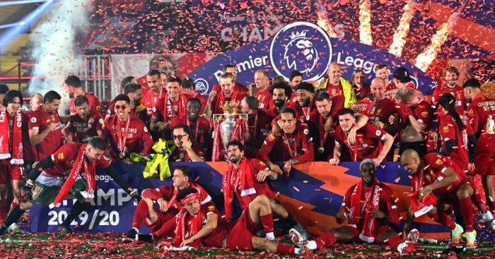

Liverpool win Premier League: Reds' 30-year wait for top-flight title ends
As the global pandemic disrupted life in England and led to the suspension of the Premier League for three months, Liverpool supporters endured a nervous wait to see how the season would end, with some early suggestions it might have been
declared null and void, thus wiping their remarkable efforts from the record books.
The Premier League's return this month enabled them to cap their stunning success.
However, because of the measures put in place in response to
the virus, Liverpool will not be able to celebrate their long-awaited success with their supporters immediately, at least not in the traditional sense.
As with Wednesday's impressive 4-0 win over Crystal Palace, when they next play
at Anfield - against Aston Villa on Sunday 5 July, and for their two other remaining home games - it will be behind closed doors.
It also seems unlikely they will be able to take part in any of the usual public events in Liverpool,
such as an open-top bus parade around the city.
By a quirk of fate, though, the next time they take to the field will be at the side they have beaten to this season's title and who pipped them so narrowly last campaign, Manchester
City. Following their defeat at Chelsea, City boss Pep Guardiola congratulated Liverpool on their title success.

Real Madrid: LaLiga champions 2019/2020
Real Madrid win LaLiga with battling victory over Villarreal Real Madrid sealed their 34th LaLiga title on Thursday with a 2-1 win over Villarreal at a sweltering Alfredo di Stefano in the suburbs of Madrid. Zidane’s side have been irresistibly unspectacular since the return of football and it was in that same style that they won their 10th game in a row and marched to another trophy under their French manager. Zidane, often almost accused of having some secret formula for success that he refuses to divulge, has done it again.
Real Madrid celebrate their 34th Liga title Real Madrid's very basic strategy of winning with functional football complete with a robust defence while waiting for Barcelona to fall over themselves worked. Zidane's secret formula has landed them another trophy and while Ramos and co. won't be going to Cibeles to celebrate, the victory will feel all the sweeter given what they have battled through to come back after three months, go on a winning streak like they have and replace their eternal rivals at the summit of LaLiga when it mattered most.
2019–20 Paris Saint-Germain F.C. season
The 2019–20 Ligue 1 season, also known as Ligue 1 Conforama for sponsorship reasons, was a French association football tournament within Ligue 1. It was the 82nd season since its establishment. The season began on 9 August 2019 and ended abruptly on 28 April 2020.[4] On 13 March 2020, the LFP suspended Ligue 1 and Ligue 2 indefinitely following the outbreak of COVID-19 in France.[5] On 28 April 2020, it was announced that Ligue 1 and Ligue 2 campaigns would not resume, after the country banned all sporting events until September.
Paris Saint-Germain were awarded the championship following the cancellation of the 2019–20 season.[7][8] PSG topped the standings by 12 points with a game in hand at the time the league was halted. Marseille and Rennes were awarded the other two UEFA Champions League spots based on their rankings at the league's suspension. On 9 June 2020, France's highest administrative court ruled that relegation for Amiens and Toulouse was suspended for this season.[9] This was overruled on 23 June and subsequently Amiens and Toulouse were relegated to the 2020–21